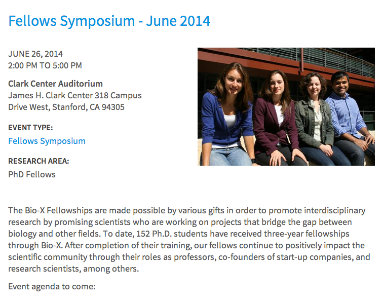
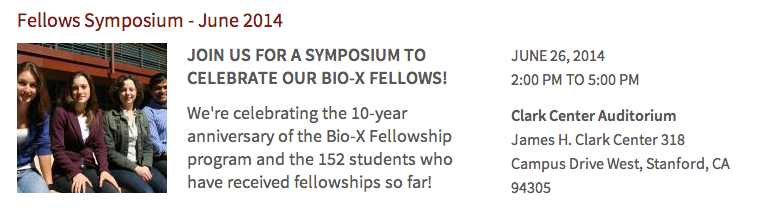
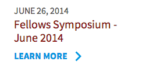
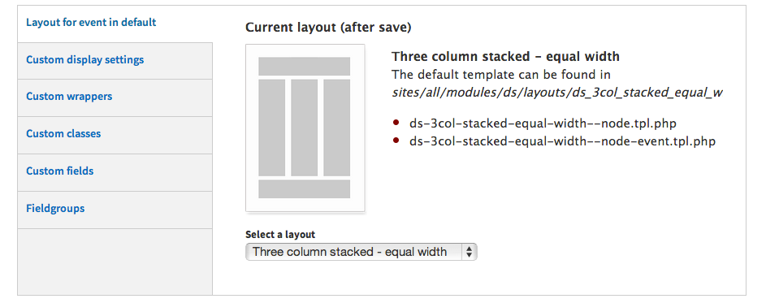
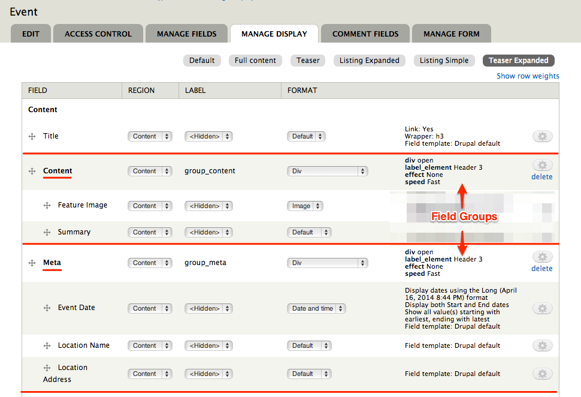
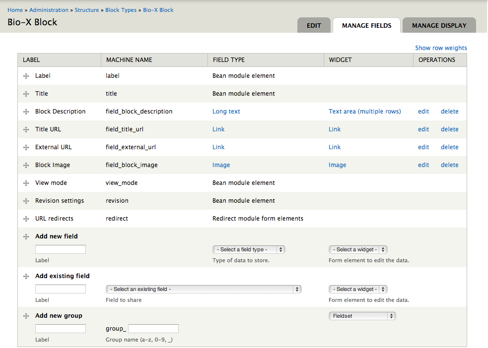
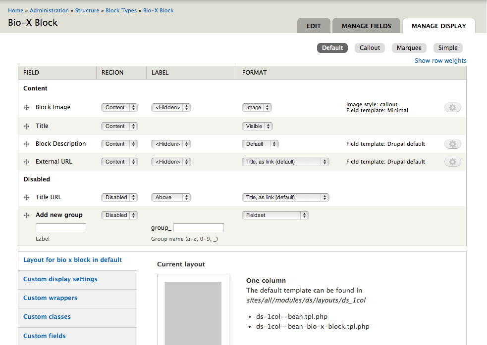
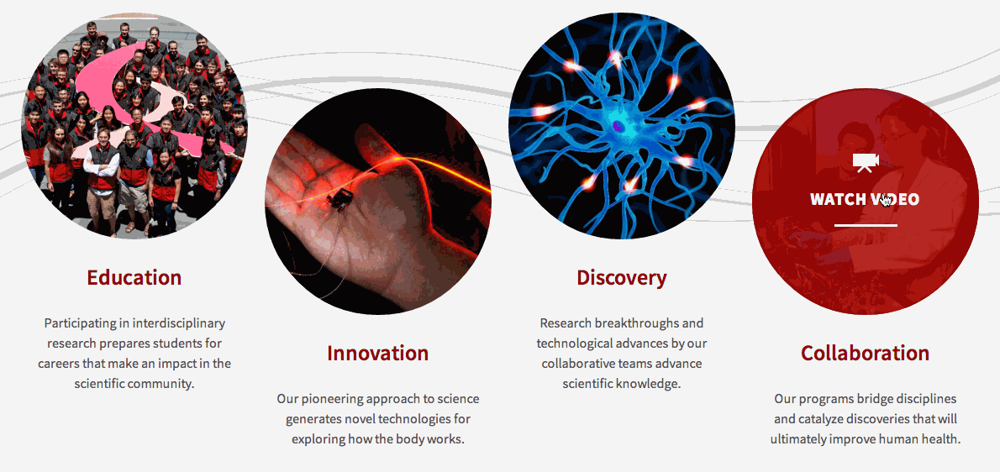
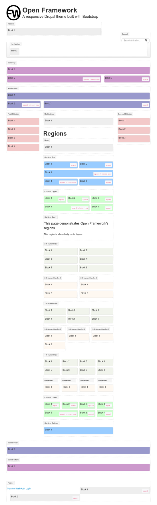
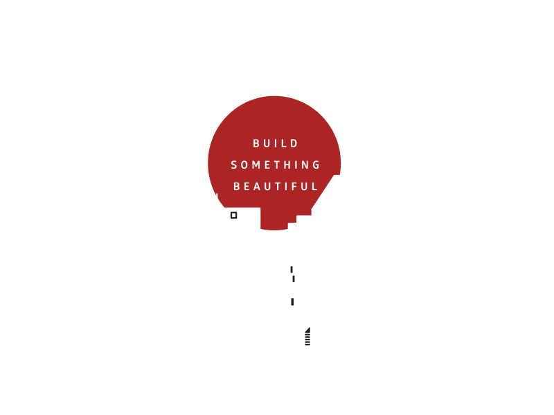

Custom Themes
Without the Custom Themes
Pushing the visual style of Stanford Site
Themes
HTML + CSS + JS
Stanford Sites
*No Outside Code
Permitted beyond this point
Included Modules
HTML
</>
The Drupal Page
Layout
Blocks
Views
Nodes
Display Suite
View Modes



DS Layouts

Psuedo Layouts with Field Groups

Views
Yay...clean list markup!
Block Class
B.E.A.N.
Blocks Entities Aren't Nodes
Link



Open Framework

Regions
Breakpoints
- max-width: 480px
- max-width: 767px
- min-width: 786px - max-width:979
- Defualt
- min-width: 1200px
Bootstrap Grids
.span#
CSS
{ }
CSS Injector
Importing Fonts
@import url(https://fonts.googleapis.com/css?family=Source+Sans+Pro:400,600,700,400italic,600italic,700italic);
Chrome Dev Tools
Style Guide
Sass + Compass
Inlining Images
menu.scss
.menu {
background: inline-image('open.png') no-repeat;
}
menu.css
.menu {
background: url('') no-repeat;
}
js
( )
Drupal -> HTML -> CSS -> Drupal
